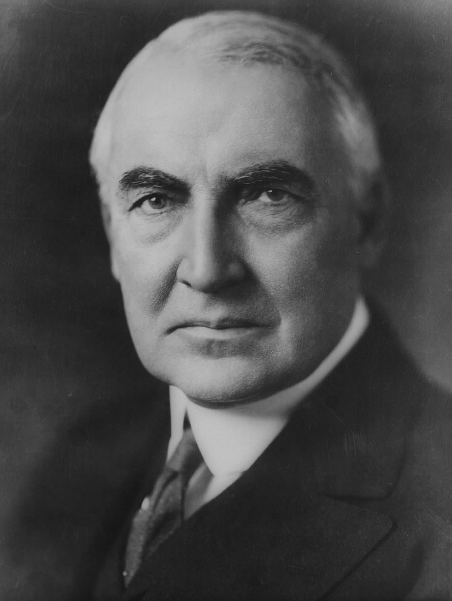

Directions: Read the two treaty excerpts and study the photograph, then answer all five questions. Use facts from the lesson.
Article 231 of the Treaty of Versailles (Avalon Project, Yale Law School): "The Allied and Associated Governments affirm and Germany accepts the responsibility of Germany and her allies for causing all the loss and damage to which the Allied and Associated Governments and their nationals have been subjected as a consequence of the war imposed upon them by the aggression of Germany and her allies."
Article 10 of the League Covenant (Avalon Project, Yale Law School): "The Members of the League undertake to respect and preserve as against external aggression the territorial integrity and existing political independence of all Members of the League."

1. According to Article 231, what does Germany accept, and what payments did that acceptance support under Article 232?
2. What does Article 10 promise, and what condition did Lodge's Reservation 2 place on that promise for the United States?
3. On March 19, 1920, the treaty with reservations received 49 votes in favor and 35 against, yet it failed. Explain why, naming the rule and one bloc that voted no on every version.
4. Name two events of 1919, one from the strikes or race violence and one from the Red Scare, and state what each showed about the country in that year.
5. The man in the photograph won the election of 1920. Name him, give the word his campaign used for what the country needed, and state his share of the popular vote.
1. [Blueprint 12] Germany accepts responsibility for causing all the loss and damage of the war, charged to the aggression of Germany and her allies. Under Article 232 that acceptance supported reparations: compensation for damage done to the civilian population of the Allied and Associated Powers and to their property, in an amount set by a Reparation Commission.
2. [Blueprints 12, 13] Article 10 promises that League members will respect and preserve the territorial integrity and existing political independence of all members against external aggression. Reservation 2 declared that the United States assumed no such obligation, and no obligation to use its armed forces under the treaty, unless Congress provided for it in each particular case by act or joint resolution.
3. [Blueprint 13] Ratification requires two thirds of the Senate, and 49 of 84 votes falls short of that share. The irreconcilables, led by Senator William E. Borah, voted no on every version of the treaty. Wilson's Democrats, voting on his instructions against the reserved version in November 1919, were the other bloc central to the failure; on the March vote enough senators still withheld support to keep the count below two thirds.
4. [Blueprint 14] Any one from the first group: the strike wave of 1919 (more than 3,600 strikes, some four million workers, including Seattle, steel, and coal), or the Red Summer violence (Chicago, July 27 to August 1919, 38 dead, 23 of them Black; or Elaine, Arkansas). Any one from the second group: the bombings of the spring of 1919, the Palmer raids of November 7, 1919, the arrests of January 2, 1920, or the deportation of 249 aliens on the Buford. Together they showed a country in conflict over work, race, and feared revolution at the moment the war ended.
5. [Blueprint 15] Warren G. Harding. His campaign word was normalcy, from his May 1920 statement that the country needed "not heroics, but healing; not nostrums, but normalcy." He won about 60 percent of the popular vote and 404 electoral votes to 127 for James M. Cox.
Teacher note. This check is formative. Items are tagged to blueprint entries 12 to 15 in the key. The common weak answer on question 3 calls 49 to 35 a victory and misses the two thirds rule; the common weak answer on question 2 restates Article 10 without naming Congress as the condition in Reservation 2.